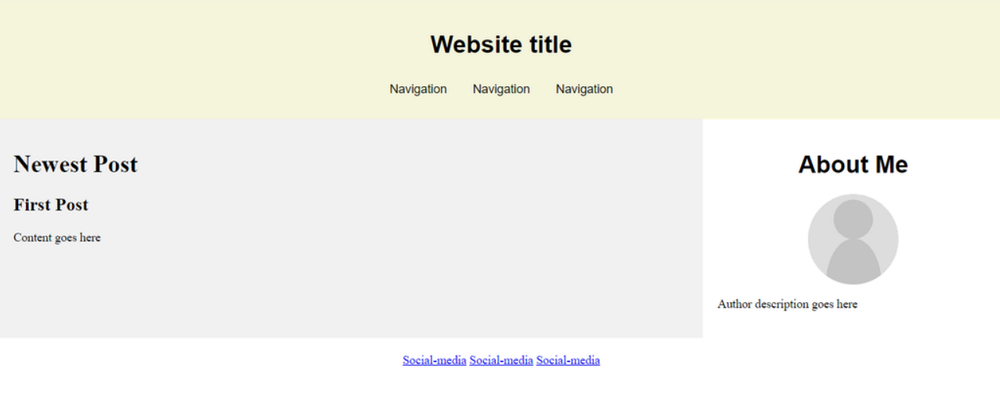

Cómo hacer una página web en HTML: 7 sencillos pasos
Crear un sitio web hoy en día es sencillo y no requiere conocimientos de codificación. Plataformas como WordPress o un creador de sitios web ofrecen una interfaz visual sencilla y funciones de arrastrar y soltar para facilitar el proceso de desarrollo.
Sin embargo, puede que quieras crear sitios web desde cero con lenguaje de marcado de hipertexto (HTML). Aunque es más difícil, los sitios web HTML son más flexibles y rápidos, ya que necesitan menos recursos para funcionar.
Este artículo te enseñará cómo hacer una página web en HTML. También te proporcionaremos prácticas posteriores al desarrollo para mejorar el aspecto y la funcionalidad de tu sitio HTML.
Cómo hacer una página web en HTML
Esta sección proporcionará instrucciones paso a paso para aprender cómo hacer una página web en HTML. Antes de continuar, consulta nuestra hoja de trucos HTML si no estás familiarizado con el lenguaje de marcado estándar.
Crear un sitio web hoy en día es sencillo y no requiere conocimientos de codificación. Plataformas como WordPress o un creador de sitios web ofrecen una interfaz visual sencilla y funciones de arrastrar y soltar para facilitar el proceso de desarrollo.
Sin embargo, puede que quieras crear sitios web desde cero con lenguaje de marcado de hipertexto (HTML). Aunque es más difícil, los sitios web HTML son más flexibles y rápidos, ya que necesitan menos recursos para funcionar.
Este artículo te enseñará cómo hacer una página web en HTML.
1. Elige un editor de código HTML
Editor de Código: Herramienta Esencial para Desarrollo Web
Un editor de código es un software que se utiliza para escribir tu sitio web. Aunque puedes crear una página HTML con un editor de texto predeterminado como el Bloc de notas, este carece de funciones que ayudan a simplificar el proceso de desarrollo, como:
- Resaltado de Sintaxis: marca las etiquetas HTML en distintos colores según su categoría. Esto hace que la estructura del código sea más fácil de leer y comprender.
- Autocompletado: sugiere automáticamente atributos, etiquetas y elementos HTML basándose en el valor anterior para acelerar el proceso de codificación.
- Detección de Errores: resalta los errores de sintaxis, lo que permite al desarrollador web advertirlos y corregirlos rápidamente.
- Integración: algunos editores de código se integran con plugins, Git y clientes FTP para hacer más eficiente el proceso de implementación.
- Vista Previa en Vivo: en lugar de abrir los archivos HTML manualmente en los navegadores, puedes instalar un plugin para obtener una vista previa en vivo del sitio.
Como hay muchas opciones, hemos enumerado algunos de los mejores editores de código HTML para ayudarte a encontrar uno
que se adapte a tus necesidades:
- Notepad++: un editor de texto ligero y gratuito con funciones añadidas para la codificación y compatibilidad con plugins.
- Atom: un editor HTML de código abierto con una función de previsualización en vivo del sitio web y una amplia compatibilidad con lenguajes de marcado y scripting.
- Visual Studio Code (VSCode): una popular herramienta para el desarrollo web con una completa biblioteca de extensiones para ampliar sus funcionalidades.
2. Planifica el diseño del sitio
Crear un plan de diseño te permite visualizar mejor el aspecto de tu sitio web. También puedes utilizarlo como lista de control para saber qué elementos incluir en tu sitio.
Además, un plan de diseño te ayuda a determinar la usabilidad y la navegación de tu sitio, que afectan a la experiencia del usuario. Algunos elementos a tener en cuenta en la planificación son la cabecera, el pie de página y la navegación del sitio.
Puedes utilizar lápiz y papel o un programa de diseño web como Figma para diseñar un sitio web. No tiene por qué ser detallado, siempre que represente a grandes rasgos el aspecto y la sensación de tu sitio.
3. Escribe el código HTML
Una vez que la herramienta y el plan de diseño estén listos, puedes empezar a escribir el código de tu sitio. Los pasos pueden variar dependiendo de tu editor de código, pero la idea general es similar.
En este tutorial, te mostraremos cómo hacerlo utilizando VSCode:
- Crea una nueva carpeta en tu ordenador. Será el directorio para todos los archivos de tu sitio.
- Abre VSCode → Archivo → Abrir carpeta.
- Localiza la nueva carpeta y haz clic en Seleccionar carpeta
- Selecciona Archivo -> Nuevo archivo. Nombra el archivo index.html y pulsa Intro.
- Haz clic en Crear archivo nuevo para confirmar.
- Cuando aparezca la pestaña del editor index.html, introduce la siguiente estructura básica de documento HTML:
4. Crear elementos en el diseño
Añade código HTML en el archivo index.html para crear los elementos de tu diseño previsto. Dependiendo del diseño de tu página web, necesitarás diferentes elementos semánticos HTML.
Estos elementos separarán tu sitio en varias secciones y se convertirán en los contenedores del contenido. Estas son las etiquetas que utilizaremos:
Coloca estos elementos dentro de las etiquetas body en el código de tu archivo index. Asegúrate de cerrar cada elemento con una etiqueta de cierre, o tu código no funcionará.Este es el aspecto del código completo:
- header: contenedor para el contenido introductorio o la navegación
- main: representa el contenido principal de una página web.
- div: define una sección en un documento HTML.
- footer: contiene el contenido que aparece en la parte inferior de tu página web.
Coloca estos elementos dentro de las etiquetas
en el código de tu archivo index.html. Asegúrate de cerrar cada elemento con una etiqueta de cierre, o tu código no funcionará. Este es el aspecto del código completo:
5. Añade el contenido HTML
Cuando el diseño esté listo, empieza a rellenarlo con el contenido de tu sitio, como texto, imágenes, hipervínculos o videos. Si el contenido no está listo, usa contenido ficticio como marcador de posición y sustitúyelo más tarde.Estas son algunas etiquetas que utilizaremos para añadir el contenido del sitio web:
- h1 y p: contienen texto de encabezamiento y de párrafo. Usa la etiqueta br para crear un salto de línea si el texto es demasiado largo.
- nav y a: especifican la barra de navegación y su elemento de anclaje. Utiliza el atributo href para especificar la URL enlazada del ancla.
- img: contenedor para el elemento imagen. Contiene el atributo img src, que especifica el enlace o el nombre del archivo de imagen.
6. Incluye CSS de diseño
Como HTML solo te permite crear la estructura del sitio web y añadir contenido básico, utiliza Hojas de Estilo en Cascada (CSS) para cambiar su diseño. CSS es un lenguaje que define el estilo de tu documento HTML. Para ello, crea un archivo style.css y enlaza la hoja de estilos al documento HTML
7. Personaliza tu sitio
Además de cambiar el diseño, utiliza CSS para personalizar otros aspectos visuales de tu sitio web. Por ejemplo, puedes cambiar la familia de fuentes y la imagen de fondo. Para cambiar la apariencia de tu sitio web, añade las propiedades CSS en el elemento que quieras personalizar.
| Realizado por: | Siguenos en las redes sociales: |
| Begoña Calvo, Daniel Artigues y Carlos Agueda |


|